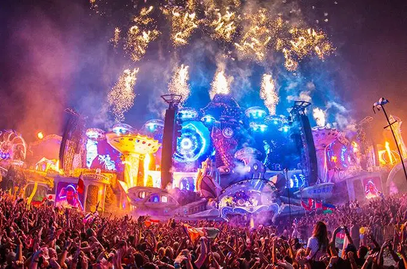
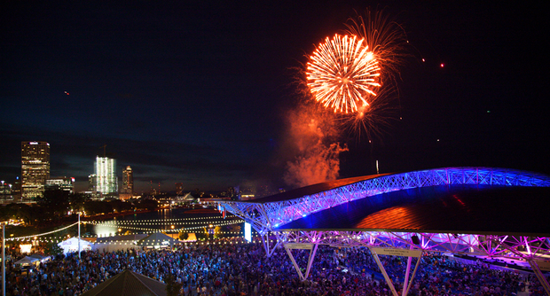

Tomorrowland – Boom(Bélgica)

Tomorrowland é o maior festival de música eletrônica do mundo realizado anualmente. A terra do amanhã, como se traduz o nome da festa, é feita exatamente para se perder a noção de tempo e espaço Segundo os própris criadores a ideia era fazer algo inspirado no Disney World, porém, numa versão mais adulta com duração de dois dias de imersão no show de decoração que simula um fundo fantástico. Sua edição original é realizada em Boom na Bélgica, cidade com menos de 20 mil habitantes, no distrito de Antuérpia. A edição brasileira foi anunciada em 20 de julho de 2014, e foi realizada na cidade de Itu, São Paulo, até 2016. Nos Estados Unidos, contava com outro nome, TomorrowWorld. Sendo a edição norte-americana realizada, até 2015, na cidade de Atlanta, Geórgia. Em 2019, o festival teve sua primeira edição de Inverno, na França. O festival é organizado pela We Are One World, empresa criada pelos seus fundadores. Dada sua magnitude, o festival também se destaca entre festivais de outros gêneros, como o Rock In Rio e Lollapalooza.
Anualmente, o evento reúne quase 500 mil pessoas em Boom, Província de Antuérpia e que está localizada há cerca de 35km de Bruxelas, capital da Bélgica.
Site Oficial
Summerfest - Milwaukee(EUA)

Anunciado como o maior festival de música do mundo, o Summerfest é realizado todo ano ao longo de 11 dias à beira do Lago Michigan em Milwaukee, Wisconsin. Quase 900.000 pessoas vão assistir à apresentação de mais de 800 bandas em 11 palcos e aproveitar as comidas, bebidas e shows de humor que complementam a música. Entre as atrações principais que já passaram pelo festival estão Bruno Mars, Lady Gaga, The Rolling Stones, Violent Femmes, Johnny Cash, Bob Dylan e Tim McGraw, mas o que não falta são talentos promissores e locais abrangendo todos os gêneros nos palcos menores.
Site oficial

2020 MULTI VIAGENS - TODOS OS DIREITOS RESERVADOS